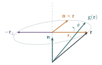

STEP III 2022，第 7 题
继续之前，请先阅读题目（原题为英文）。题目载于 OCR 提供下载的 2022 年 STEP 试卷（zip 文件）内的 STEP III 试卷： www.ocr.org.uk/Images/696587-2022-past-papers.zip
引子
在二维空间中，旋转（rotation）一个点很容易：乘以 \(e^{\mathrm{i}\theta}\) 便可。到了三维空间，事情就困难得多。没有一个复数可以让我们直接相乘，绕不同轴的旋转不可交换（commute），而要写出“绕通过 \((1, 2, 2)\) 的轴旋转 \(37^\circ\)”的矩阵，看来更是令人却步。
本题利用叉积（cross product），为任意的轴和任意的角构造出这个矩阵。所得的结果就是罗德里格旋转公式（Rodrigues’ rotation formula），由罗德里格（Olinde Rodrigues）于 1840 年发表。机械人技术、电脑图像和太空船导航每天都用到它，而它亦揭示了一个优美的事实：与 \(\mathbf{n}\) 作叉积，就是“绕 \(\mathbf{n}\) 旋转 \(90^\circ\)”，而每一个绕 \(\mathbf{n}\) 的旋转都由它构成，正如 \(e^{\mathrm{i}\theta} = \cos\theta + \mathrm{i}\sin\theta\) 是由乘以 \(\mathrm{i}\) 构成一样。
动笔之前
当 \(\mathbf{r}\) 垂直于 \(\mathbf{n}\) 时，\(\mathbf{n} \times \mathbf{r}\) 在几何上是甚么样子？当 \(\mathbf{r}\) 平行于 \(\mathbf{n}\) 时又如何？
若 \(\mathbf{r} \parallel \mathbf{n}\)，则 \(\mathbf{n} \times \mathbf{r} = \mathbf{0}\)。若 \(\mathbf{r} \perp \mathbf{n}\)，则 \(\mathbf{n} \times \mathbf{r}\) 的长度与 \(\mathbf{r}\) 相同（因为 \(|\mathbf{n}| = 1\)，而夹角是 \(90^\circ\)），与两者皆垂直，而且根据右手定则（right-hand rule），它就是 \(\mathbf{r}\) 绕 \(\mathbf{n}\) 逆时针旋转 \(90^\circ\) 的结果（沿 \(\mathbf{n}\) 向下看）。因此 \(\mathrm{f}\) 消去 \(\mathbf{r}\) 沿 \(\mathbf{n}\) 方向的分量（component），并把垂直的分量旋转 \(90^\circ\)。这幅图像足以解释整条题目。
逐步解题
阶段 1 作两次叉积
\(\mathrm{f}(\mathbf{r}) = \mathbf{n} \times \mathbf{r} = (bz - cy,\ cx - az,\ ay - bx)\)。再与 \(\mathbf{n} = (a, b, c)\) 作一次叉积，\(\mathrm{f}(\mathrm{f}(\mathbf{r}))\) 的 \(x\) 分量是 \[b(ay - bx) - c(cx - az) = -x(b^2 + c^2) + aby + acz. \qed\] 由于 \(a^2 + b^2 + c^2 = 1\)，上式等于 \(-x(1 - a^2) + aby + acz = a(ax + by + cz) - x\)，这正是 \((\mathbf{n}.\mathbf{r})\mathbf{n} - \mathbf{r}\) 的 \(x\) 分量。其余分量可由对称性得出，所以 \(\mathrm{f}(\mathrm{f}(\mathbf{r})) = (\mathbf{n}.\mathbf{r})\mathbf{n} - \mathbf{r}\)。■
设 \(\mathbf{r} = \mathbf{r}_\parallel + \mathbf{r}_\perp\)，其中 \(\mathbf{r}_\parallel = (\mathbf{n}.\mathbf{r})\mathbf{n}\) 是沿 \(\mathbf{n}\) 方向的分量。用这两部分表示，\(\mathrm{f}(\mathrm{f}(\mathbf{r}))\) 是甚么？
\(\mathrm{f}(\mathrm{f}(\mathbf{r})) = \mathbf{r}_\parallel - \mathbf{r} = -\mathbf{r}_\perp\)。施行 \(\mathrm{f}\) 两次，会消去平行的部分，并把垂直的部分绕 \(\mathbf{n}\) 旋转 \(180^\circ\)，亦即把它反向（图 7.5.1）。这就是 \(\mathrm{i}^2 = -1\) 的类比。
阶段 2 旋转
计算 \(\mathrm{g}(\mathbf{n})\)。然后对于 \(\mathbf{r} \perp \mathbf{n}\) 的情况计算 \(\mathrm{g}(\mathbf{r})\)，并利用 \(\mathrm{f}(\mathrm{f}(\mathbf{r})) = -\mathbf{r}\) 对这样的 \(\mathbf{r}\) 成立这一点。
\(\mathrm{f}(\mathbf{n}) = \mathbf{n} \times \mathbf{n} = \mathbf{0}\)，所以 \(\mathrm{g}(\mathbf{n}) = \mathbf{n}\)：轴保持不动。若 \(\mathbf{r} \perp \mathbf{n}\)，则 \(\mathrm{f}(\mathrm{f}(\mathbf{r})) = -\mathbf{r}\)，于是 \[\mathrm{g}(\mathbf{r}) = \mathbf{r} + \sin\theta\,(\mathbf{n} \times \mathbf{r}) - (1 - \cos\theta)\mathbf{r} = \cos\theta\,\mathbf{r} + \sin\theta\,(\mathbf{n} \times \mathbf{r}).\] 由于 \(\mathbf{n} \times \mathbf{r}\) 是 \(\mathbf{r}\) 绕 \(\mathbf{n}\) 转过 \(90^\circ\) 的结果，长度不变，所以上式就是 \(\mathbf{r}\) 绕 \(\mathbf{n}\) 旋转 \(\theta\) 的结果，与平面上的 \((\cos\theta + \mathrm{i}\sin\theta)z\) 如出一辙。由于 \(\mathrm{g}\) 是线性（linear）的，而每个向量都可写成 \(\mathbf{n}\) 的倍数与一个垂直于 \(\mathbf{n}\) 的向量之和，所以 \(\mathrm{g}\) 就是绕通过原点、方向为 \(\mathbf{n}\) 的轴旋转角 \(\theta\) 的旋转（从 \(\mathbf{n}\) 的尖端望去为逆时针方向）。■

阶段 3 反射
利用第 (i) 部分化简 \(\mathrm{h}(\mathbf{s}) = -\mathbf{s} - 2\mathrm{f}(\mathrm{f}(\mathbf{s}))\)。它对沿 \(\mathbf{n}\) 方向的向量有甚么作用？对垂直于 \(\mathbf{n}\) 的向量又有甚么作用？
\(\mathrm{h}(\mathbf{s}) = -\mathbf{s} - 2\bigl((\mathbf{n}.\mathbf{s})\mathbf{n} - \mathbf{s}\bigr) = \mathbf{s} - 2(\mathbf{n}.\mathbf{s})\mathbf{n}\)。垂直于 \(\mathbf{n}\) 的向量保持不变，而 \(\mathrm{h}(\mathbf{n}) = -\mathbf{n}\)。所以 \(\mathrm{h}\) 是对通过原点且垂直于 \(\mathbf{n}\) 的平面的反射（reflection）。■
回顾
分解为平行和垂直的部分。一旦把 \(\mathbf{r}\) 分解为沿 \(\mathbf{n}\) 方向和与之垂直的分量，每一步都变得清晰。
线性减省工夫。要辨认一个线性映射（linear map），只需知道它对几个精心挑选的向量有甚么作用便足够。
复数的类比。在垂直于 \(\mathbf{n}\) 的向量上，\(\mathrm{f}\) 的表现就像乘以 \(\mathrm{i}\)：\(\mathrm{f}^2 = -1\)，而 \(\mathrm{g} = \cos\theta + \sin\theta\,\mathrm{f}\)。
背后的数学
三维空间中每一个固定原点的旋转，都是绕某条通过原点的轴的旋转。欧拉（Euler）于 1775 年证明了这一点。用矩阵的语言来说，每个 \(3 \times 3\) 旋转矩阵都有一个特征值（eigenvalue）为 \(1\) 的特征向量（eigenvector），也就是旋转轴。罗德里格公式给出其逆命题：对每一条轴 \(\mathbf{n}\) 和每一个角 \(\theta\)，旋转矩阵是 \[\mathbf{R} = \mathbf{I} + \sin\theta\,\mathbf{K} + (1 - \cos\theta)\,\mathbf{K}^2, \qquad \mathbf{K} = \begin{pmatrix} 0 & -c & b \\ c & 0 & -a \\ -b & a & 0 \end{pmatrix},\] 其中 \(\mathbf{K}\) 是 \(\mathbf{r} \mapsto \mathbf{n} \times \mathbf{r}\) 的矩阵。由于 \(\mathbf{K}^3 = -\mathbf{K}\)，指数级数（exponential series）\(e^{\theta\mathbf{K}} = \mathbf{I} + \theta\mathbf{K} + \frac{\theta^2}{2!}\mathbf{K}^2 + \cdots\) 恰好化简成这条公式，它就是 \(e^{\mathrm{i}\theta} = \cos\theta + \mathrm{i}\sin\theta\) 的三维版本。旋转与“无穷小旋转”\(\mathbf{K}\) 的指数之间的这种联系，正是李群（Lie groups）理论的起点。
旋转不可交换
把一本书平放，先绕垂直轴旋转 \(90^\circ\)，再绕水平轴旋转 \(90^\circ\)；然后从头再来，以相反的次序做这两个旋转。书最终的位置并不相同。三维空间中旋转的复合（composition）不符合交换律，与二维的情况不同。这正是 第 6.7 节 的四元数（quaternion）有用的原因之一：绕 \(\mathbf{n}\) 旋转 \(\theta\) 对应于四元数 \(\cos\frac\theta2 + \sin\frac\theta2(a\mathrm{i} + b\mathrm{j} + c\mathrm{k})\)，而复合旋转就是把四元数相乘，不可交换性已包含在其中。罗德里格本人在 1840 年的论文中，已找到旋转的复合公式，比哈密顿（Hamilton）发明四元数还早三年。
思维技巧
要理解一个变换，可把空间分成变换处理得简单的几块：在这里，就是轴（保持不动）和与轴垂直的平面（被旋转）。
这与 第 7.2 节 中特征向量的想法相同：找出变换所保持的子空间（subspace），然后在每一块上分别研究它。
延伸练习
平面上的旋转。试做 STEP III 2017，第 2 题。该题利用复数，证明平面上的两个旋转复合起来仍是一个旋转，只有一种例外。找出这个例外，以及此时复合的结果是甚么。
一个具体的旋转。求绕方向为 \((1, 1, 1)\) 的轴旋转 \(120^\circ\) 的矩阵。证明它把各坐标轴循环置换。
\(\mathbf{K}\) 的幂。证明 \(\mathbf{K}^2\mathbf{r} = (\mathbf{n}.\mathbf{r})\mathbf{n} - \mathbf{r}\) 及 \(\mathbf{K}^3 = -\mathbf{K}\)，并由指数级数推导出罗德里格公式。
两次反射构成一个旋转。证明先后对两个通过原点、互成 \(\alpha\) 角的平面作反射，结果是绕两平面的交线旋转 \(2\alpha\)。
延伸阅读
Simon Altmann, Rotations, Quaternions, and Double Groups（Dover）。关于三维旋转的权威论著，当中包括罗德里格的贡献。
Simon Altmann, “Hamilton, Rodrigues, and the quaternion scandal”, Mathematics Magazine 62 (1989)。一篇简短而生动的历史叙述。
John Stillwell, Naive Lie Theory（Springer）。为大学本科生而写的旋转、四元数与李群入门。